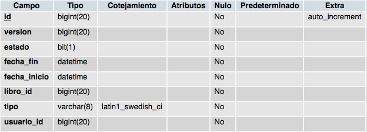

Dominios y servicios (I)
Hasta ahora hemos visto como interactúa nuestra aplicación con la base de datos, pero es cierto que no hemos entrado a fondo. En esta sesión, veremos como Grails implementa la comunicación entre la aplicación y la base de datos. En primer lugar, analizaremos como trabaja GORM (Grails Object Relational Mapping), que permite mapear los objetos de nuestra aplicación contra un sistema de base de datos. Posteriormente, seguiremos profundizando en la creación de dominios para terminar viendo la validación de datos de la aplicación.
GORM
En algunos frameworks de desarrollo, es posible que el término de dominio sea sustituido por el término modelo o entidad. Ambos términos son sinónimos y se refiere a la posibilidad de que los objetos de la aplicación sean persistidos contra una base de datos. En este sentido, el equipo de desarrollo de Grails se decidió por crear GORM. Bueno, en realidad no crearon GORM desde cero, ya que GORM utiliza por debajo Hibernate 3, una potente solución para el mapeado de objeto relacionales y que además es de código abierto. GORM simplemente es una capa superior que facilita algo más el trabajo a los desarrolladores, sobre todo en términos de usabilidad.
Creación de dominios
Como puedes imaginar, lo primero que se debe hacer con una clase de dominio es crearla. Como ya vimos en la sesión 5, el comando utilizado para generar una nueva clase de dominio es grails create-domain-class seguido del nombre de la nueva clase que queremos crear. Pero, ¿qué pasa en la base de datos cuando generamos nuestras clases de dominio? Para ver exactamente que es lo que pasa en la base de datos cuando creamos una nueva clase de dominio, vamos a tomar como ejemplo la clase Operacion.
class Operacion {
String tipo
Boolean estado
Date fechaInicio
Date fechaFin
Usuario usuario
Libro libro
static belongsTo = [Usuario, Libro]
}
Por el momento no vamos a ver las restricciones introducidas en su momento para la clase Operacion y simplemente vamos a examinar la definición de las propiedades. Pasemos a ver que tabla nos ha creado nuestra aplicación en un gestor de base de datos como MySQL.

Si ahora comparamos la clase de dominio Operacion con la tabla de la base de datos operacion encontraremos las siguientes diferencias.
Nuevas columnas
La primera diferencia que encontramos es la existencia de dos nuevas columnas en la tabla correspondiente de la base de datos. La primera de ellas es la columna id que además es la clave primaria de la tabla y autoincremental. Esto puede parecer que es algo en contra de Grails ya que no vamos a poder establecer la clave primaria que nosotros queremos, pero en la práctica se ha demostrado que es la mejor forma a la hora de interactuar con la base de datos. La otra nueva columna que se ha generado en la tabla es el campo version y servirá para garantizar la integridad transaccional y el bloqueo eficiente de las tablas cuando se realizan operaciones de entrada.
Nombre de las columnas
El nombre de las propiedades que en la clase de dominio seguían el convenio CamelCase (palabras sin espacios en blanco y con la primera letra de cada una de ellas en mayúscula), en la tabla se han convertido al formato snake_case (todas las palabras en minúsculas y separadas por un subrayado bajo _).
Claves ajenas
GORM representa las claves ajenas en la tabla con el nombre de la clase/tabla referencia en minúsculas seguido de _id.
Tipos de datos
Dependiendo de la base de datos utilizada (en nuestro caso MySQL), GORM transformará los tipos de datos de las propiedades de la clase de dominio en otros tipos de datos en la tabla. Por ejemplo, el tipo de dato String se sustituye en la base de datos por varchar(), mientras que el tipo de dato Date es reemplazado por Datetime. Todo esto dependerá de la base de datos utilizada y es posible que varíe entre ellas.
Valores por defecto
Muchas aplicaciones tienen para alguno de los campos de la base de datos valores por defecto. En nuestro ejemplo no tenemos ninguno, pero si necesitáramos disponer de uno de ellos, podríamos tener algo así String tipo = "prestamo". En este caso, si el usuario no selecciona ningún tipo de operación al dar de alta una de ellas, se seleccionará el tipo préstamo por defecto.
Ficheros
Aunque en la mayoría de los casos, no es una buena práctica almacenar ficheros en las tablas de una base de datos, esto se deja a elección del desarrollador. Si necesitamos hacer esto en nuestra aplicación, para por ejemplo almacenar una imagen de nuestros usuarios, debemos crear la propiedad de la clase de dominio con el tipo de dato byte[]. En la tabla correspondiente en la base de datos se creará una columna del tipo de dato tinyblob.
Relaciones entre clases de dominio
Cualquier aplicación que vayamos a desarrollar, presentará relaciones entre sus clases de dominio. En nuestro ejemplo de scaffolding ya definimos algunas relaciones entre ellas y ahora vamos a ver más en detalle esas relaciones. Las posibles relaciones entre las clases de dominio de una aplicación son:
- Uno a uno
- Uno a muchos
- Muchos a uno
- Muchos a muchos
Si hacemos algo de memoria de la definición de nuestras clases de dominio, recordaremos que utilizábamos las palabras reservadas hasMany y belongsTo para establecer sus relaciones. Existe también la palabra reservada hasOne y a continuación veremos en detalle cada una de las posibles relaciones y como especificarlas.
Uno a uno
Una relación uno-a-uno se da cuando un objeto de la clase A está únicamente relacionado con un objeto de la clase B y viceversa. Por ejemplo, en el modelo conceptual de datos de nuestra aplicación veíamos que un libro sólo podía tener una operación activa. Esto se representaría con una relación uno-a-uno y podríamos hacerlo de tres formas diferentes.
Primera forma de establecer una relación uno a uno
class Libro{
....
OperacionActiva operact
....
}
class OperacionActiva{
....
Libro libro
....
}
Segunda forma de establecer una relación uno a uno
class Libro{
....
OperacionActiva operact
....
}
class OperacionActiva{
....
static belongsTo = [operact:OperacionActiva]
....
}
En este caso, las inserciones y los borrados se realizan en cascada. Si por ejemplo hacemos new Libro(operact:new OperacionActiva()).save() en primer lugar se creará una operación activa y posteriormente se creará el libro. De igual forma, si eliminamos el libro asociado a la operación activa, ésta se eliminará también de la base de datos.
Tercera forma de establecer una relación uno a uno
class Libro{
....
static hasOne = [operact:OperacionActiva]
....
}
class OperacionActiva{
....
Libro libro
....
}
En esta ocasión, se creará una relación bidireccional de uno a uno entre los libros y las operaciones activas y se creará una columna de clave ajena en la tabla operacion_activa llamada libro_id.
Uno a muchos
Una relación uno-a-muchos se da cuando un registro de la tabla A puede referenciar muchos registros de la tabla B, pero todos los registros de la tabla B sólo pueden referenciar un registro de la tabla A. Por ejemplo, en nuestra aplicación de ejemplo, una operación sólo puede estar asignada a un usuario, pero un usuario puede tener muchas operaciones. Esto se representaría de la siguiente forma en la definición de las clases de dominio.
class Usuario{
....
static hasMany [operaciones:Operacion]
}
class Operacion {
....
Usuario usuario
}
No hace falta decir que las relaciones muchos-a-uno son idénticas a las relaciones uno-a-muchos.
Muchos a muchos
En una relación muchos-a-muchos un registro de la tabla A puede referenciar muchos registros de la tabla B y un registro de la tabla B referenciar igualmente muchos registros de la tabla A. Lamentablemente, en nuestra aplicación ejemplo no disponemos de ninguna relación de este tipo, pero imaginemos el ejemplo de las relaciones que los alumnos universitarios tienen con las asignaturas de una carrera. Un alumno puede estar matriculado en muchas asignaturas y una asignatura puede tener muchos alumnos. Esto se representaría con una relación muchos-a-muchos de la siguiente forma.
class Alumno{
....
static hasMany = [asignaturas:Asignatura]
}
class Asignatura{
....
static belongsTo = Alumno
static hasMany = [alumnos:Alumno]
}
En GORM, una relación muchos-a-muchos se representa indicando en ambas clases la propiedad hasMany y en al menos una de ellas la propiedad belongsTo.
Aspectos avanzados de GORM
Ahora que ya hemos visto la parte básica a la hora de crear una clase de dominio (establecer sus propiedades y las relaciones entre ellas), vayamos un paso más adelante y veamos aspectos algo más avanzados de GORM
Ajustes de mapeado
Hay ocasiones en que los administradores de las bases de datos quieren, por cualquier motivo, que las columnas de las tablas de sus bases de datos sean nombradas siguiendo un determinado patrón. Estos motivos pueden ir desde cuestiones de facilidad en la lectura de los campos hasta argumentos como "así se ha hecho toda la vida y no se va a cambiar". El tema está en que hay que conformarse con sus ordenes y acatarlas y encontrar la mejor forma para adaptarse a ellas.
Para solucionar este posible problema que se nos puede plantear en cualquier organización, GORM dispone de una forma rápida y sencilla para ajustar estos nombres de las columnas de las tablas relacionadas. Para ello, GORM emplea una sintaxis de tipo DSL y exige crear un nuevo closure estático llamado mapping de la siguiente forma static mapping = {//Todo el mapeado de la tabla aquí}. Veamos los posibles cambios que podemos hacer con GORM.
Nombres de las tablas y las columnas
Si necesitáramos cambiar por ejemplo el nombre de la tabla usuario por tbl_usuario, deberíamos escribir dentro del closure mapping el siguiente código table 'tbl_usuario'. Si ahora quisiéramos cambiar los nombres de las columnas login y password por username y passwd, podríamos hacer lo siguiente:
static mapping = {
table 'tbl_usuario'
columns {
login column:'username'
password column:'passwd'
}
}
Con esto, ya tendríamos cambiados los nombres de las tablas y de las columnas para adaptarlos al convenio que nosotros queramos seguir.
Deshabilitar el campo version
Por defecto, GORM utiliza un campo llamado version para garantizar la integridad de los datos y está demostrado que es un buen método. Sin embargo, por cualquier motivo es posible que no queramos tener este campo en nuestra tabla y para ello, simplemente debemos especificar en el mapeado de la clase lo siguiente: version false.
Carga perezosa de los datos
Por defecto, Grails realiza una carga perezosa de los datos de las propiedades. Esto es que no se cargarán en memoria hasta que no sean solicitados por la operación, lo cual nos previene de posibles pérdidas de rendimiento al cargar demasiados datos innecesarios. Sin embargo, si queremos cambiar este comportamiento por defecto de Grails, podemos hacer lo siguiente: operaciones lazy:false.
Herencia de clases
La herencia de clases es algo muy común y GORM lo implementa de una forma tan sencilla como es extendiendo la clase. Por ejemplo, si en el diseño de la clase usuario hubiéramos optado por extender dicha clase con los cuatro tipos posibles de usuario, tendríamos algo así:
class Usuario{
....
}
class Administrador extends Usuario{
....
}
class Bibliotecario extends Usuario{
....
}
class Profesor extends Usuario{
....
}
class Socio extends Usuario{
....
}
Pero, ¿cómo se transformaría esto en la base de datos? GORM habría almacenado todos los datos en una única tabla y además, hubiera añadido un campo llamado class que permitiría distinguir el tipo de instancia creada. No obstante, si optásemos por tener una tabla por cada tipo de usuario, podríamos tener lo siguiente:
class Usuario{
....
}
class Administrador extends Usuario{
static mapping = {
table = 'administrador'
}
}
class Bibliotecario extends Usuario{
static mapping = {
table = 'bibliotecario'
}
}
class Profesor extends Usuario{
static mapping = {
table = 'profesor'
}
}
class Socio extends Usuario{
static mapping = {
table = 'socio'
}
}
Otra opción sería especificar en la clase padre la propiedad tablePerHierarchy a falso de la siguiente forma:
class Usuario{
.....
static mapping = {
tablePerHierarchy false
}
}
Habilitando la caché
Uno de las grandes ventajas de Hibernate es la posibilidad de utilizar una caché de segundo nivel, que almacena los datos asociados a una clase de dominio. Para configurar esta caché de segundo nivel, en primer lugar debemos modificar el archivo de configuración grails-app/conf/DataSource.groovy y en segundo lugar, modificar la clase de dominio correspondiente. Empecemos por las modificaciones sobre el archivo DataSource.groovy. Estas son las modificaciones que debemos introducir.
hibernate {
cache.use_second_level_cache=true
cache.use_query_cache=true
cache.provider_class='com.opensymphony.oscache.hibernate.OSCacheProvider'
}
Posteriormente, debemos indicar en cada clase de dominio que propiedades queremos cachear. Por ejemplo, si quisiéramos cachear el nombre de nuestros usuarios podríamos tener lo siguiente:
class Usuario{
....
static mapping = {
nombre cache:true
}
}
Propiedades transitorias
Por defecto, con GORM todas las propiedades definidas en una clase de dominio son persistidas en la base de datos. Sin embargo, en ocasiones es posible que tengamos determinadas propiedades que no deseamos que sean almacenadas en la base de datos, tales como por ejemplo la confirmación de una contraseña por parte de un usuario. Para ello, podemos añadir una nueva propiedad llamada transients a la clase de dominio correspondiente con la propiedad que no deseamos persistir en la base de datos.
class Usuario {
static transients = ["confirmarPassword"]
String login
String password
String confirmarPassword
String nombre
String apellidos
}
Eventos GORM
GORM dispone de dos métodos que se llaman automáticamente antes y después de insertar y actualizar las tablas de la base de datos. Estos métodos son beforeInsert() y beforeUpdate(). Gracias a estos métodos, vamos a poder realizar determinadas operaciones siempre antes de insertar o actualizar datos de nuestros registros. Por ejemplo, imagina el caso en el que tuviéramos que almacenar cuando se creo una operación de nuestra aplicación y la última acción realizada sobre ella. Necesitaríamos por ejemplo un par de propiedades llamadas fechaCreacion y fechaUltimaModificacion. Para automáticamente actualizar esta información en nuestra clase de dominio, podríamos utilizar los métodos beforeInsert() y beforeUpdate() de la siguiente forma:
def beforeInsert = {
fechaCreacion = new Date()
fechaUltimaModificacion = new Date()
}
def beforeUpdate = {
fechaUltimaModificacion = new Date()
}
Ahora, cuando se realice una nueva operación, se almacenará la fecha en la que se creó y también la última fecha en la que se modificó. Además de estos dos métodos comentados, GORM también dispone de los métodos beforeDelete(), afterInsert(), afterUpdate(), afterDelete() y onLoad().
Validación
Cuando en la quinta sesión desarrollamos nuestra aplicación gracias al scaffolding, ya vimos como imponer determinadas restricciones a las propiedades de las clases, para que en caso de que estas restricciones no se cumplan, el objeto no sea persistido en la base de datos y se muestre un error al usuario indicándole el problema. Esto es debido a que el método save() devuelve cierto o falso dependiendo de si los datos pueden ser persistidos o no en la base de datos.
La principal funcionalidad de las restricciones es validar los datos introducidos antes de que éstos sean guardados en la base de datos, pero también puede ser utilizadas para imponer determinadas características a las tablas de la base de datos. Por ejemplo, si establecemos como restricción de una propiedad de una clase de dominio que puede contener el valor null, ésta restricción se reflejará directamente en las características de la tabla.
Restricciones predefinidas en GORM
Para controlar estas restricciones, GORM dispone de una serie de funciones comunes predefinidas para establecerlas. Además, también nos permitirá crear nuestras propias restricciones. Hasta ahora, ya hemos visto algunas de estas restricciones como pueden ser size, unique, blank o inList entre otras. Recordamos que para establecer las restricciones de una clase de dominio debemos establecer la propiedad estática constraints como en el siguiente ejemplo.
class Usuario {
String login
String password
String nombre
String apellidos
String tipo
static hasMany = [operaciones:Operacion]
static constraints = {
login(size:6..20, blank:false, unique:true)
password(size:6..20, blank:false,password:true)
nombre(blank:false)
apellidos(blank:false)
tipo(inList:["administrador", "bibliotecario", "profesor", "socio"])
}
....
}
A continuación, vamos veremos las restricciones que podemos utilizar directamente con GORM.
| Nombre | Descripción | Ejemplo |
|---|---|---|
| blank | Valida si la cadena puede quedar o no vacía | login(blank:false) |
| creditCard | Valida si la cadena introducida es un número de tarjeta correcto | tarjetaCredito(creditCard:true) |
| Valida si la cadena introducida es un correo electrónico correcto | correoElectronico(email:true) | |
| password | Indica si la propiedad es una contraseña, con lo que al introducirla no se mostrará directamente | contrasenya(password:true) |
| inList | Valida que la propiedad contenga cualquiera de los valores pasados por parámetro | tipo(inList:["administrador", "bibliotecario", "profesor", "socio"]) |
| matches | Valida la cadena introducida contra una expresión regular pasada por parámetro | login(matches:"[a-zA-Z]+") |
| max | Valida que el número introducido no sea mayor que el número pasado por parámetro | price(max:999F) |
| min | Valida que el número introducido no sea menor que el número pasado por parámetro | price(min:0F) |
| minSize | Valida que la longitud de la cadena introducida sea superior al número pasado por parámetro | hijos(minSize:5) |
| maxSize | Valida que la longitud de la cadena introducida sea inferior al número pasado por parámetro | hijos(maxSize:15) |
| notEqual | Valida que el objeto asignado a la propiedad no sea igual que el objeto pasado por parámetro | login(notEqual:"admin") |
| nullable | Valida si el objeto puede ser null o no | edad(nullable:true) |
| range | Valida que el objeto esté dentro del rango pasado por parámetro | edad(range:0..99) |
| scale | Indica el número de decimales de la propiedad | salario(scale:2) |
| size | Valida que la longitud de la cadena esté dentro del rango pasado por parámetro | login(size:5..15) |
| unique | Especifica que la propiedad debe ser única y no se puede repetir ningún objeto | login(unique:true) |
| url | Valida que la cadena introducida sea una dirección URL correcta | website(url:true) |
Construir tus propias restricciones
Pero seríamos un tanto ilusos si pensáramos que el equipo de desarrollo de Grails ha sido capaz de crear todas las posibles restricciones existentes en cualquier aplicación. Ellos no lo han hecho, pero si han dejado la posibilidad de crear nuestras propias restricciones de una forma rápida y sencilla.
Si echamos un vistazo a la clase de dominio Operacion, podemos detectar rápidamente que una posible restricción que nos falta por añadir sería la comprobación de que tanto la fecha inicio como la fecha fin no sea anterior a la fecha actual. Para esta restricción, Grails se ha olvidado de nosotros ya que si repasamos la lista de restricciones predefinidas, no encontramos ninguna que satisfaga dicha restricción. Para crear nuevas restricciones, tenemos el closure validator. Veamos como quedaría la restricción que comprueba que la fecha inicio no sea anterior a la fecha actual.
package biblioteca
class Operacion {
String tipo
Boolean estado
Date fechaInicio
Date fechaFin
Usuario usuario
Libro libro
static belongsTo = [Usuario, Libro]
static constraints = {
tipo(inList:["prestamo", "reserva"])
estado()
fechaInicio(nullable:false,
validator: {
if (it?.compareTo(new Date()) < 0)
return false
return true
}
)
fechaFin(nullable:false)
}
String toString() {
"$tipo ($estado) [$fechaInicio - $fechaFin]"
}
}
El closure validator debe devolver true en caso de que la validación se pase correctamente y false en caso contrario. Gracias a la variable it podemos acceder al valor introducido para analizarlo y comprobar que cumple los requisitos, en este caso, que la fecha no sea anterior a la actual.
Si seguimos pensando en más restricciones de la clase de dominio Operacion, podemos pensar también en que no tiene sentido que la fecha fin de una operación sea anterior a su fecha inicio. Para ello, podemos añadir la siguiente restricción a la propiedad fecha fin.
fechaFin(nullable:false,
validator: {
val, obj ->
if (val != null){
return val.after(obj.fechaInicio)
}
}
)
Básicamente, el código del closure es muy similar al anterior, sin embargo en este se introduce el paso de las variables val y obj. La variable val se refiere al valor de la variable (en este caso fechaFin). En el anterior closure esta variable se llamaba it. Por otro lado, tenemos también la variable obj que se refiere al nuevo objeto que estamos creando (en este caso una Operacion). El dato que necesitamos comparar del objeto obj es la fechaInicio del mismo.
Sin duda, esta forma de crear nuevas restricciones para las propiedades de nuestras clases de dominio es muy sencilla, intuitiva y potente. Además, este método para crear nuevas restricciones permite incluso la utilización de consultas a la base de datos, para comprobar la existencia de datos duplicados en la base de datos. Por ejemplo, imagina que un usuario no puede tener más de un determinado número de préstamos. De esta forma evitaremos que un usuario acumule una cantidad ingente de libros. Veamos como podríamos hacer esto utilizando las restricciones.
tipo(inList:["prestamo", "reserva"],
validator: {
val, obj ->
if ((val=="prestamo") && (Operacion.findAllByTipoAndUsuario(val,obj.usuario).size() > 5))
return false
return true
}
)
Con esta restricción, estamos prohibiendo que los usuarios puedan tener en préstamos más de 5 libros.
Si queremos reutilizar determinadas restricciones, podemos implementarlas en el archivo de configuración Config.groovy. De esta forma podríamos definir una nueva restricción para por ejemplo definir aquellas características que deben cumplir los nombres de usuario de nuestra aplicación.
grails.gorm.default.constraints = {
username(nullable:false, blank:false, unique:true, size:6..20)
}
Posteriormente, en las clases de dominio afectadas por esta restricción, podríamos hacer uso de la siguiente forma:
login(shared:"username")
Mensajes de error de las restricciones
Sin lugar a dudas, los mensajes que se generan cuando se produce un error en las restricciones de una clase de dominio, no es lo más deseable para un usuario final, así que es necesario que entendamos el mecanismo que utiliza Grails para devolver estos mensajes cuando se producen estos errores.
Si recordamos la clase de dominio Usuario, tenemos que el nombre y los apellidos no pueden dejarse vacíos. Esto lo hacíamos utilizando la restricción blank:false. Al intentar crear un usuario sin escribir su nombre o sus apellidos, recibiremos un mensaje de error como el siguiente La propiedad [nombre] de la clase [class Usuario] no puede ser vacía. Pero, ¿cómo se encarga Grails de mostrar estos mensajes de error?
Grails implementa un sistema jerárquico para los mensajes de error basado en diferentes aspectos como puede ser el nombre de la clase de dominio, la propiedad o el tipo de validación. Para el caso del error producido al saltarnos la restricción de no dejar en blanco el campo nombre de la clase de dominio Usuario, dicha jerarquía sería la siguiente.
usuario.nombre.blank.error.nombre usuario.nombre.blank.error.java.lang.String usuario.nombre.blank.error usuario.nombre.blank.nombre usuario.nombre.blank.java.lang.String usuario.nombre.blank blank.nombre blank.java.lang.String blank
Este sería el orden en el que Grails buscaría en nuestro archivo message.properties hasta encontrar cualquier propiedad y mostrar su mensaje. En caso de no encontrar ninguna de estas propiedades, se mostraría la cadena asociado a la propiedad default.blank.message, que es la que encontramos por defecto en el archivo message.properties.
De esta forma, ya podemos personalizar los mensajes de error generados al incumplir las restricciones de nuestras clases de dominio. Simplemente comentar que para las restricciones creadas por nosotros mismos, la jerarquía de los mensajes en el validador introducido en la clase de dominio Operacion empezaría por operacion.fechaInicio.validator.error.fechaInicio y así sucesivamente tal y como hemos visto anteriormente.